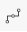

1.4. Barra de Herramientas¶
En ADempiere contamos con una barra de herramientas la cual contiene una serie de iconos que realizan determinadas funciones. La barra de herramientas que a continuación será definida se encuentra ubicada en la ventana estándar de ADempiere.
Imagen 1. Barra de Herramientas de ADempiere en Ventana Estándar

A continuación se define la operatividad de dicha barra de herramientas.
Imagen 2. Barra de Herramientas de ADempiere

Icono |
Nombre |
Descripción |
|---|---|---|
|
Ignorar Cambios |
Le permitirá ignorar los cambios realizados, ya sea por error o por falta de información. |
|
Ayuda |
Contiene información para el usuario acerca de la ventana donde se encuentra. |
|
Registro Nuevo |
Le permitirá realizar un registro nuevo. |
|
Copiar Registro |
Le permitirá copiar un registro existente. |
|
Eliminar Registro |
Permitirá borrar un registro existente. |
|
Borrar Artículos Seleccionados |
Permitirá eliminar un registro en específico o varios registros. |
|
Guardar cambios |
Permitirá guardar el registro. |
|
Refrescar |
Permitirá actualizar la ventana donde se encuentra ubicado. |
|
Encontrar Registro |
Permitirá hacer la búsqueda de un registro existente. |
|
Anexo |
Adjuntará un documento o imagen. |
|
Comentario |
Permitirá hacer un comentario sobre el documento. |
|
Cambiar Mono/Multi Registro |
Permitirá cambiar la vista de los registros, es decir, en mono podrá ver un solo registro mientras que en multi podrá ver varios registros. |
|
Registros Históricos |
Permitirá ver los registros dependiendo de ciertos parámetros. |
|
Registro Padre |
Mostrará la pestaña anterior. |
|
Registro Detallado |
Mostrará la pestaña siguiente. |
|
Primer Registro |
Permitirá ver el primer registro. |
|
Registro Anterior |
Permitirá ver el registro anterior. |
|
Próximo Registro |
Permitirá ver el siguiente registro. |
|
Último Registro |
Permitirá ver el último registro. |
|
Informe |
Permitirá ver un reporte de alguna transacción. |
|
Documentos e Informes Archivados |
Mostrará los documentos e informes que se encuentran archivados. |
|
Imprimir |
Permitirá imprimir un documento. |
|
Bloquea Registro Privado |
Permite bloquear el registro. |
|
Visualiza detalle |
Permitirá ver donde está siendo usado el documento. |
 |
Flujos de trabajo |
Permitirá ver los flujos de trabajos activos pendientes por ejecutar.(Completar, Procesar, entre otros). |
|
Chequee Solicitudes |
Permitirá ver solicitudes realizadas. |
|
Información de Producto |
Permitirá buscar información sobre un producto en específico. |
|
Proceso |
Permite realizar diferentes procesos según el tipo de ventana. |
|
Entrada Rápida |
Permite crear un registro en la ventana de forma rápida. |